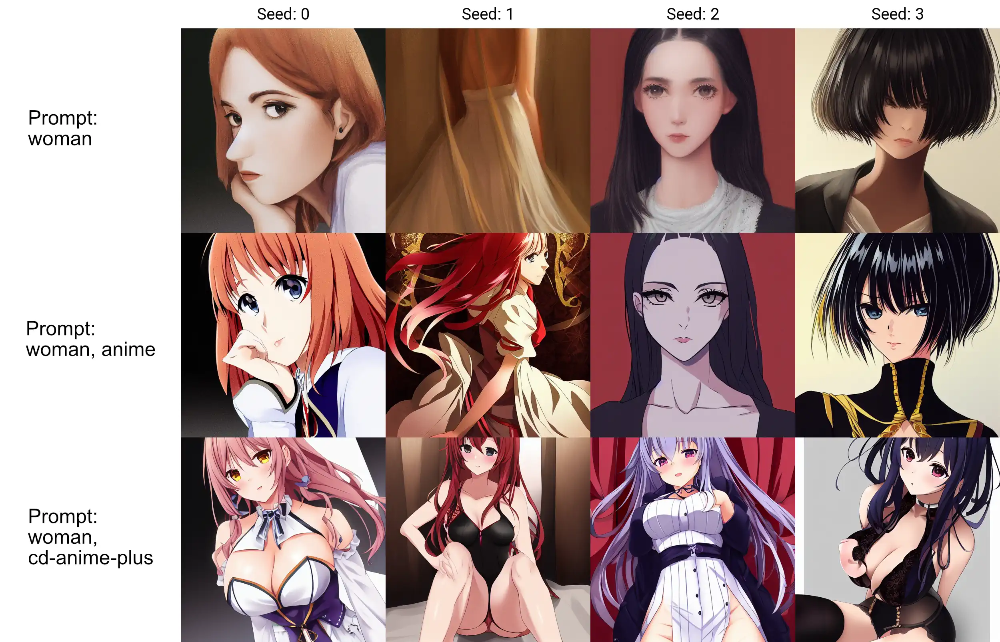

This page features embeddings that I have either created myself or found online and believe they and well created. All embeddings available here are in the image format version so you can simply right-click and save the image to download any embedding.
Textual Inversion Embeddings
CDcruz - Anime Plus V2 - WIP 

This embedding was trained by myself with roughly 5.5k images (11.8k including flipped images) of anime women characters taken from Pintrest. The current embedding was trained for 11.5k steps (1 Epoch) with the Waifu Diffusion 1.3 model as a base.
I have hand-picked all of these images from Pintrest and used a smart-cropping software to generally include the characters face. I have tried to collect a large variety of images with different poses, angles, clothing and backgrounds. As they are all hand-picked images, they are also of higher quality and do not include unwanted images like loli or similar characters. As Pintrest filters out NSFW images, I was not able to train on any NSFW images, which does mean this embedding will not improve those images greatly.
This embedding will work best with Waifu Diffusion, but it can also influence Stable Diffusion images a decent amount, although results are obviously weaker.
I plan on improve this embedding more with a larger dataset in the future or even create my own model depending on how things go. I do prefer creating embeddings/ hypernetworks due to the flexibility you can have with extending any other model.
Anime Plus V1
Version 1 was trained by myself with roughly 1.5k images of anime women characters taken from Pintrest. It was trained for 10,000 steps with the Waifu Diffusion 1.3 model as a base.
CDcruz - Manga Style - WIP
This embedding was trained on roughly one thousand manga style images taken from Pintrest. A decent amount of the training data was cleaned up to remove text bubbles or other text from the images to improve training results. There are no hentai images included in the data set yet, but I would like to include more hentai related imagery once I find a good resource for downloading quality images.
For best results make sure to include
CDcruz - E-Girls - WIP

This embedding was trained by myself with roughly 700 images of women with an E-girl aesthetic taken from Pintrest. As "E-girl" style could vary depending on indiviual opinion, this may not be exactly what you have in mind. It isn't exactly my perfect E-girl style either, but finding good quality images for this has been more difficult through Pintrest. I may need to find a better repository for this training. The current embedding was trained for 20,000 steps with the Stable Diffusion 1.4 model as a base.
Even though this embedding was trained on Stable Diffusion, from my testing it actually creates great images with Waifu Diffusion.
I plan on improve this embedding more with a larger dataset in the future or even create my own model depending on how things go. I do prefer creating embeddings/ hypernetworks due to the flexibility you can have with extending any other model.